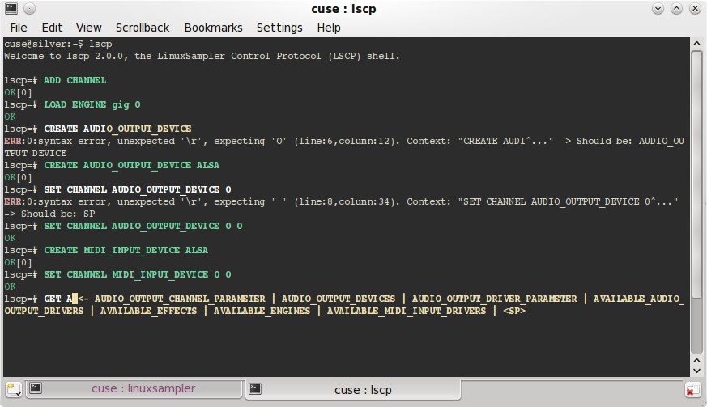
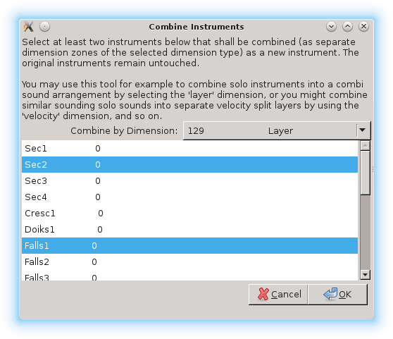

Unbelievable six years have passed since the last release of LinuxSampler. A load of things have changed in silence, which I want to summarize for you in this article.
The sampler's code base has seen substantial changes during that long period. The sampler engine code base has been unified to a set of common, abstract base classes which cleared the way for two new sampler engines:
Another major new feature is the brand new support for so called Real-Time Instrument Scripts, which are small programs that may be bundled with sound files to extend the sampler with custom behavior for individual sounds. You may know such instrument scripts from commercial software samplers. At the moment this scripting feature is yet limited to the Giga format engine. Find out more ...

Also noteworthy is the new command line application lscp, which is a text based shell for controlling the sampler from the command line, providing colored output, type completion, help text while typing LSCP commands and other convenient features for terminal enthusiasts who want to use the sampler without GUI frontend applications. Find out more ...
You may now also load external effects directly into the sampler. The LSCP network protocol (v1.7) has been extended to manage such effects respectively. Effect chains may be built, and the individual sampler parts may be routed to an individual position of effect chains. At this point only LADSPA plugins are supported yet. However the sampler's effect subsystem uses an abstract interface, which allows easy integration of other effect systems. Also new with latest LSCP version is the ability to trigger MIDI CCs by LSCP command.
You may have heard that the GigaStudio software has seen its last version with GigaStudio 4. Tascam officially discontinued this product, its intellectual property has been sold several times among companies and there is currently no way to buy a new copy of GigaStudio anymore. However the GigaStudio format is still under active development with LinuxSampler. We not only added support for the latest features introduced with GigaStudio 4: iMIDI rules for example which allow to trigger notes by MIDI CC and allow i.e. defining a set of legato samples; for the first time ever we also added our own extensions to the Giga format: one of it is the previously mentioned new instrument scripting feature and a more minor extension is support for various other MIDI CCs which were never supported by GigaStudio before. So you can now use any MIDI CC for EG1 controller, EG2 controller and attenuation controller.
The sampler's host plugins have also seen some enhancements: the LV2 plugin now stores and restores the sampler's overall state with the song of your DAW application, the LV2 and AudioUnit plugin's outputs were increased from 2 audio channels to 16 upon request by some users and the VST plugin now uses the sampler's MIDI instrument mapping system to show a list of available sounds to allow the user to switch among them. And last but not least the VST plugin may also be used on Mac now.
Also Gigedit, our instrument editor for the GigaStudio/Gigasampler format, had been enhanced quite a lot during the last six years. As mentioned above, we introduced our own extensions to the Giga format. Obviously all those extensions will not work with any GigaStudio version, they only work with a recent version of Gigedit and LinuxSampler. Gigedit will inform you whenever you are using such kind of custom Giga format extension, so that you are always aware in case your changes to sounds are not cross/backward compatible with the GigaStudio software. You may also disable those warnings on the settings menu.
Until now you were only able to edit either exactly one dimension region or all dimension regions simultaneously with gigedit. With this release you may now hold the Ctrl button and select a specific set of dimension region zones in the dimension region selector area (on the very bottom of the Gigedit window) with your mouse. All synthesis parameters you then change, will all be applied to that precise set of dimension region zones.
Also managing dimensions has been improved: previously to change the type of a dimension you had to delete and recreate the dimension. Which was not just inconvenient, but you also had to redefine your synthesis parameters from scratch. Now you can just open the dimension manager dialog, double click on the displayed dimension type and select another type for the respective dimension.
Another great enhancement of the dimension manager is the ability to alter the dimensions of all regions of an instrument at once. Previously you had to do that for each region on the keyboard separately. For example to delete a velocity split dimension, you had to double click on a region, delete the velocity dimension with the dimension manager dialog, then double click on the next region, delete the velocity dimension there as well, and so on. Now you can just click on the "All Regions" check box of the dimension manager, select the velocity dimension, click on "Remove" and that's it. Also notice the different display style in this "All Regions" mode, like shown on the screen shot left: Since you are viewing the dimension properties of not just one region, but of all regions of your instrument, we thought we also need to show you in case individual regions differ regarding their precise dimension properties. For example on the screen shot on the left you see that some regions have a velocity dimension with 2 zones, whereas other regions have a velocity dimension with 4 zones instead. Also there seem to be some regions which have a modulation wheel dimension and other regions which do not have a modulation wheel dimension at all. Same applies to the Layer dimension: in this particular example not all regions do have a Layer dimension. However all regions seem to have a Sample Channel (Stereo) dimension, and all regions even have the same amount of zones for that particular dimension.
When working on complex Giga sounds you certainly noticed that one could easily get lost about which samples are exactly used by which instrument or even whether a sample is actually used at all by any instrument or just left orphaned and wasting disk space. This was also due to the fact that the Giga format does not require unique names for samples. We have worked on resolving this usability issue. In the samples list view you can now read the amount of times a sample is referenced by instruments of your .gig file. If a sample is not used at all, then it will be shown in striking red color in the sample list view. You may also right click on a sample and select "Show references...", a new window appears on your screen which will show you where exactly that particular sample is used by, that is by which instruments and by which regions of those instruments. Also the other way around has been addressed: when you now edit the synthesis parameters of a particular dimension region, you may now click on the new "<- Select Sample" button and Gigedit automatically selects and displays the respective sample in the samples list view, which you then might rename to some more appropriate sample name, or you might check by which other instrument(s) that sample is used by, etc. You want to get rid of all unused samples? Simply right click on the samples list view and select "Remove unused samples", then select "Save" from the menu and all orphaned samples are gone.
You may now also remove the current sample reference from individual dimension regions (assigning a so called "NULL" sample instead) by clicking on the new "X" button next to the sample reference field on the "Sample" tab of a dimension region; this allows you to define "silent cases", that is a case where no sample should be played at all, for example this is often used for very low velocity ranges of i.e. between 0 and 6.
If you are working on .gig files with a large amount of Instruments, then you might also be glad to know that you can finally also re-order the instruments of a file by simply dragging the instruments around in the instruments list view.
 Another handy new feature for sound designers is the new "Combine" tool, which you can reach from the main menu. It allows you to select two ore more instruments (by holding down the Ctrl key while selecting with mouse left click) from your currently open Giga file and combine those selected instruments to a new instrument. This way you may for example create stunning layered sounds, or you may create velocity splits, crossfade sounds by MIDI controller and much more, all with just a few clicks. This may sound like a trivial task, but if you have worked on this before, you certainly noticed that this was often a very time consuming and error prone task before, especially with complex individual sounds which had custom region ranges, custom velocity splits and much more exotic stuff to take care of. The combine tool handles all such cases for you automatically.
Last but not least, the interaction of Gigedit with LinuxSampler (in so called "live mode") had been improved: When you click on the "Edit" button of a channel strip in QSampler or Fantasia, Gigedit will be launched with the respective instrument automatically being selected. Vice versa you may now also just select another instrument with Gigedit's instrument list view and LinuxSampler will automatically load and play that instrument on the respective sampler part for you. So no more need to switch between the Gigedit window and QSampler/Fantasia window all the time while working on your sounds with Gigedit.
As new sampler formats made it into LinuxSampler, this was also addressed with QSampler. The sound selection dialog now also enumerates the sounds of a selected SoundFont file. And to ease switching between sounds, you may now click on the name of the current instrument of a channel strip, a list will popup that alows you to quickly switch to another sound, without having to open the channel strip's detailed part dialog.
In the past, error message dialogs frequently popped up on the screen. Most of them were just telling unuseful messages, even if the overall operation with the sampler was working correctly. There is now an "ignore" check box attached to those error message dialogs, which allow you to suppress most of the annoying error messages.
Recently we created a convenient installer for Mac OS X, which conveniently installs all our software components on your Mac. So that includes the stand-alone version of the LinuxSampler backend, VST and AudioUnit plugin version of the sampler, "Fantasia" and "QSampler" frontends, our instrument editor "Gigedit", the LSCP shell and various other command line tools. You may also choose only some of them to be installed.

Using the sampler has also been improved on Mac. Before you first had to launch the LinuxSampler backend separately and then launch QSampler. Sometimes the sampler backend even had to be killed explicitly. Now you can just click on the QSampler icon and it will automatically spawn the sampler backend for you and shows its output on QSampler's integrated terminal section. When you quit QSampler, it will also stop the sampler backend for you automatically (you may tell QSampler to keep the sampler running in the background).
Our fundamental file access C++ library libgig is now more than just a supporter of the GigaStudio/Gigasampler file format. New file formats have been added and are now bundled with libgig:
Various command line tools have been added to libgig, which allow to dump, correct, extract and convert sounds between those various file formats. Refer to the individual man pages for details about how to use those new command line tools. As you can see, the ground had been prepared for further new sampler engines with LinuxSampler to come.